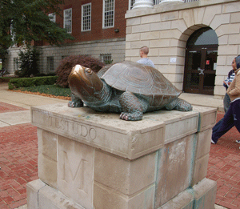

Contact Us
We really enjoyed putting together the multimedia components for this website, and in the process learning about the history of the University of Maryland College Park campus. We'd love to hear your feedback. Please send us an email with your comments and we will get back to you as soon as possible.
- Anwar, John, and Sarah
Bibliography
"Ann Raborg Bride of Ernest Cory." The Washington Post (1877-1954) [Washington, D.C.] 15 Sep. 1940, S9. ProQuest Historical Newspapers The Washington Post (1877 - 1991). ProQuest. University of Maryland, College Park, Theodore R. McKeldin Library. 12 Nov. 2007 www.ProQuest.com.
Asher, Mark. "Upper Deck Planned for Byrd Stadium: But University Delays Installing Permanent Lights." The Washington Post (1974-Current file) [Washington, D.C.] 1 May 1985, B6. ProQuest Historical Newspapers The Washington Post (1877 - 1991). ProQuest. University of Maryland, College Park, Theodore R. McKeldin Library. 29 Nov. 2007 www.ProQuest.com.
Barnes, Bart. "Videotapes Replace Classroom Lectures: Tapes Replace Classroom Lectures." The Washington Post (1974-Current file) [Washington, D.C.] 20 Apr. 1975, B1. ProQuest Historical Newspapers The Washington Post (1877 - 1991). ProQuest. University of Maryland, College Park, Theodore R. McKeldin Library. 8 Dec. 2007 www.ProQuest.com.
Barnes, Bart. "WETA: Classroom In the Living Room: WETA-TV Adaptation of Public Television Into an Educational Medium." The Washington Post, Times Herald (1959-1973) [Washington, D.C.] 7 Jul 1973, B1. ProQuest Historical Newspapers The Washington Post (1877 - 1991). ProQuest. University of Maryland, College Park, Theodore R. McKeldin Library. 8 Dec. 2007 www.ProQuest.com.
Callcott, George C. The University of Maryland at College Park, A History. Baltimore: Noble House, 2005.
"Coed Dorms Leave Students Cold." The Washington Post, Times Herald (1959-1973) [Washington, D.C.] 11 Sep. 1971, C9. ProQuest Historical Newspapers The Washington Post (1877 - 1991). ProQuest. University of Maryland, College Park, Theodore R. McKeldin Library. 2 Dec. 2007 www.ProQuest.com.
Cohen, Richard M. "Maryland U. Males Favor Coed Dorms." The Washington Post, Times Herald (1959-1973) [Washington, D.C.] 12 Feb. 1969,B7. ProQuest Historical Newspapers The Washington Post (1877 - 1991). ProQuest. University of Maryland, College Park, Theodore R. McKeldin Library. 2 Dec. 2007 www.ProQuest.com.
"From Post-Revolutionary War Tavern to Faculty Club." The Washington Post, Times Herald (1959-1973) [Washington, D.C.] 21 Nov. 1964, C. 1 ProQuest Historical Newspapers The Washington Post (1877 - 1991). ProQuest. University of Maryland, College Park, Theodore R. McKeldin Library. 12 Nov. 2007 www.ProQuest.com.
Goldstein, Amy, and David Aldridge. "Bill Would Provide Renovation Money: Byrd Stadium, Cole Field House Targeted Bill Would Help Byrd, Cole." The Washington Post (1974-Current file) [Washington, D.C.] 12 Feb. 1988, D1. ProQuest Historical Newspapers The Washington Post (1877 - 1991). ProQuest. University of Maryland, College Park, Theodore R. McKeldin Library. 29 Nov. 2007 www.ProQuest.com.
"History of the University of Maryland." University of Maryland College Park, Department of Physical Plant. Series I: Ledger, Unpublished manuscript (ARCV72-89). Date unkown. Accessed in Univ. MD. College Park, Hornbake Library, Maryland Room Archives.
Huth, Tom. "U. of Md. Students Claim Sex Not Issue in Coed Housing Plea: Regulations Bent. " The Washington Post, Times Herald (1959-1973) [Washington, D.C.] 4 Apr. 1971,B3. ProQuest Historical Newspapers The Washington Post (1877 - 1991). ProQuest. University of Maryland, College Park, Theodore R. McKeldin Library. 8 Dec. 2007 www.ProQuest.com.
"Junior Olympics Today At Byrd Stadium." The Washington Post (1877-1954) [Washington, D.C.] 22 Jul 1953, 14. ProQuest Historical Newspapers The Washington Post (1877 - 1991). ProQuest. University of Maryland, College Park, Theodore R. McKeldin Library. 29 Nov. 2007 www.ProQuest.com.
Rasa, Gustaitis. "6000 Now Study by TV at U. of Maryland." The Washington Post, Times Herald (1959-1973) [Washington, D.C.] 3 May 1962, C18. ProQuest Historical Newspapers The Washington Post (1877 - 1991). ProQuest. University of Maryland, College Park, Theodore R. McKeldin Library. 2 Dec. 2007 www.ProQuest.com.
"Maryland U. Improves Plant: Byrd Stadium to Seat 10,000; Lacrosse Games Listed." The Washington Post (1877-1954) [Washington, D.C.] 29 Jan. 1928, M25 ProQuest Historical Newspapers The Washington Post (1877 - 1991). ProQuest. University of Maryland, College Park, Theodore R. McKeldin Library. 29 Nov. 2007 www.ProQuest.com.
"Maryland U. Starts Shift To New Library Building." The Washington Post and Times Herald (1954-1959) [Washington, D.C.] 27 Dec. 1957, B1. ProQuest Historical Newspapers The Washington Post (1877 - 1991). ProQuest. University of Maryland, College Park, Theodore R. McKeldin Library. 29 Nov. 2007 www.ProQuest.com.
"New Library Is Named For M'Keldin." The Washington Post and Times Herald (1954-1959) [Washington, D.C.] 17 Apr. 1958, B1. ProQuest Historical Newspapers The Washington Post (1877 - 1991). ProQuest. University of Maryland, College Park, Theodore R. McKeldin Library. 29 Nov. 2007 www.ProQuest.com.
Norwood, Robyn. "Wheelchair Games: Spirit Is Strong: National Veterans Competition Opens at Byrd Stadium." The Washington Post (1974-Current file) [Washington, D.C.] 9 Aug. 1985, F1. ProQuest Historical Newspapers The Washington Post (1877 - 1991). ProQuest. University of Maryland, College Park, Theodore R. McKeldin Library. 29 Nov. 2007 www.ProQuest.com.
"Restoration of Historic Inn Nears Completion at U. of Md: North and South Wings of Rossborough Structure Discovered by Building Supt.; Tavern Was Rendezvous for D.C. Bloods." The Washington Post (1877-1954) [Washington, D.C.] 11 Dec. 1939,21. ProQuest Historical Newspapers The Washington Post (1877 - 1991). ProQuest. University of Maryland, College Park, Theodore R. McKeldin Library. 12 Nov. 2007 www.ProQuest.com.
"Rival Would Hurt Economic Planning, McKeldin Argues." The Washington Post and Times Herald (1954-1959) [Washington, D.C.] 26 Oct. 1954, 26-26. ProQuest Historical Newspapers The Washington Post (1877 - 1991). ProQuest. University of Maryland, College Park, Theodore R. McKeldin Library. 29 Nov. 2007 www.ProQuest.com.
Sampson, Paul. "State Budgets Fund to Boost Md. U. Rating: McKeldin Proposal Includes $2 Million For New Library." The Washington Post and Times Herald (1954-1959) [Washington, D.C.] 21 Jan. 1955, 1. ProQuest Historical Newspapers The Washington Post (1877 - 1991). ProQuest. University of Maryland, College Park, Theodore R. McKeldin Library. 29 Nov. 2007 www.ProQuest.com.
Spayd, Liz. "Degree-by-TV Program." The Washington Post (1974-Current file) [Washington, D.C.] 28 Oct. 1991, B5 ProQuest Historical Newspapers The Washington Post (1877 - 1991). ProQuest. University of Maryland, College Park, Theodore R. McKeldin Library. 2 Dec. 2007 www.ProQuest.com.
Stern, Laurence. "McKeldin Library Is Dedicated." Washington Post [Washington, D.C.] 4 May 1958, A1. ProQuest Historical Newspapers The Washington Post (1877 - 1991). ProQuest. University of Maryland, College Park, Theodore R. McKeldin Library. 29 Nov. 2007 www.ProQuest.com.
"U. OF M. ATHLETIC FIELD NAMED "BYRD STADIUM": Coach of Institute Honored in Ceremonies at College Park. MANY ACTIVITIES IN DAY. " The Washington Post (1877-1954) [Washington, D.C.] 25 Nov. 1923, 22. ProQuest Historical Newspapers The Washington Post (1877 - 1991). ProQuest. University of Maryland, College Park, Theodore R. McKeldin Library. 29 Nov. 2007 www.ProQuest.com.
Wentworth, Eric. "Maryland U. Plans First Coed Dorm." The Washington Post, Times Herald (1959-1973) [Washington, D.C.] 22 May 1969, D1. ProQuest Historical Newspapers The Washington Post (1877 - 1991). ProQuest. University of Maryland, College Park, Theodore R. McKeldin Library. 2 Dec. 2007 www.ProQuest.com.